Setting Up VSCode on MacOS
These instructions were created on 9/16/2025 for macOS Sonoma (Version 14.6.1) targeting VSCode Version 1.93.1.
Obtaining VSCode
The easiest way to obtain VSCode is from their
website. Select the version you
want, download it, open the downloaded file, and copy the application to the
Applications directory.
Setup From Fresh Install
When you start up VSCode you’ll be greeted with the “Get Started with VS Code” screen.
Pick your preferred theme.
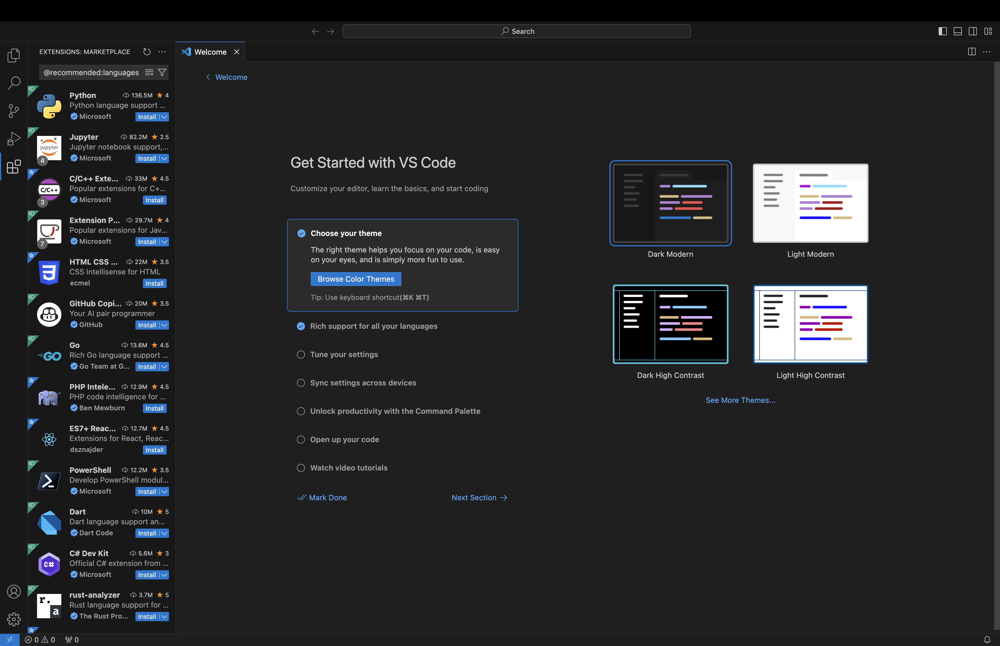Fig. 14 First you will be asked to pick your theme. The choice is up to you.
Pick your languages. We want the C/C++, and Python language extensions.
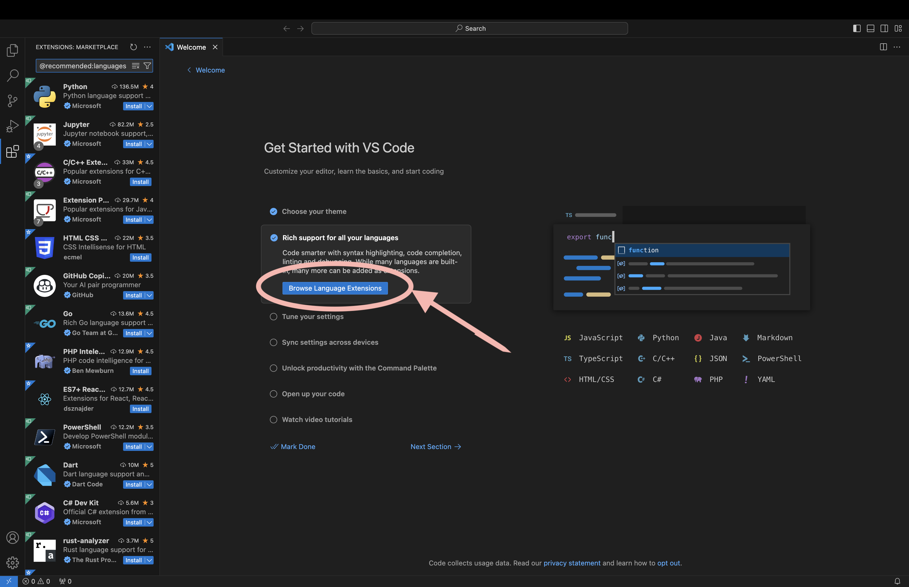Fig. 15 You will be prompted to choose the coding languages you will use.
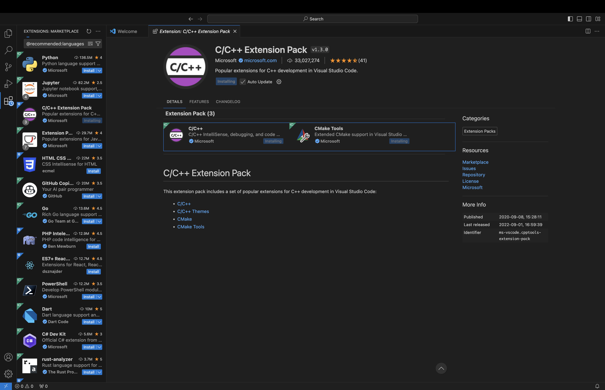Fig. 16 The VSCode C++ extension.
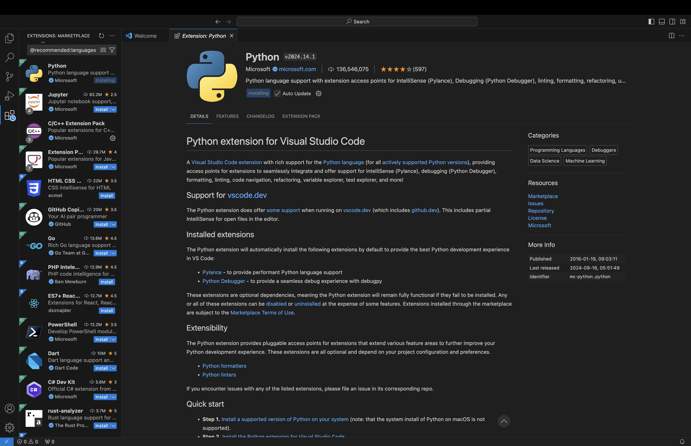Fig. 17 Install the Python extension.
If you have not previously installed “command line developer tools” follow the prompts.
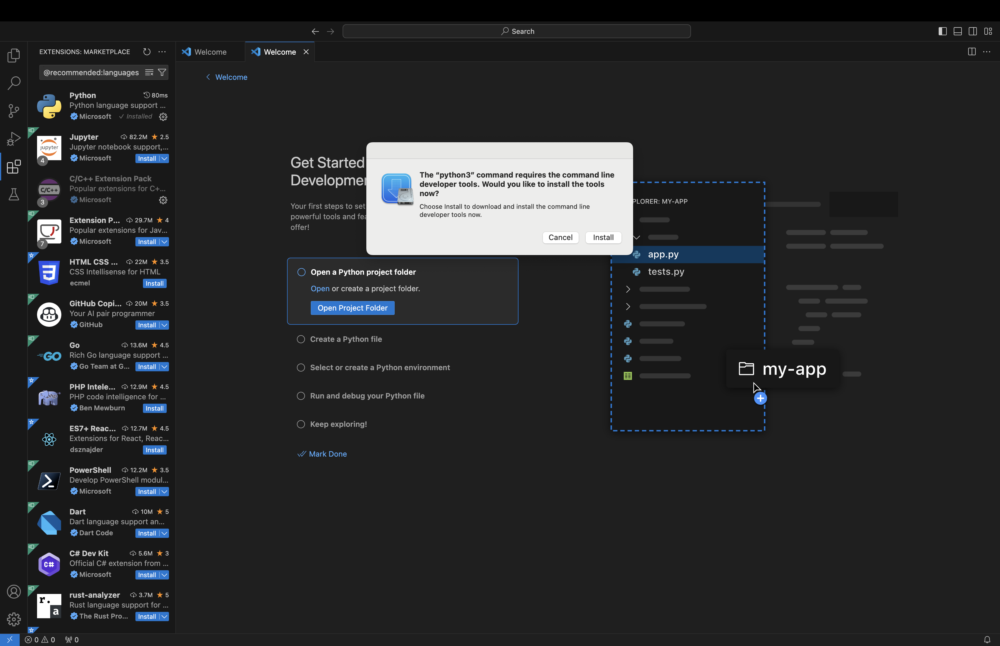Fig. 18 If necessary, install command line developer tools to get access to Python.
Tune your settings. Click “Open Settings”.
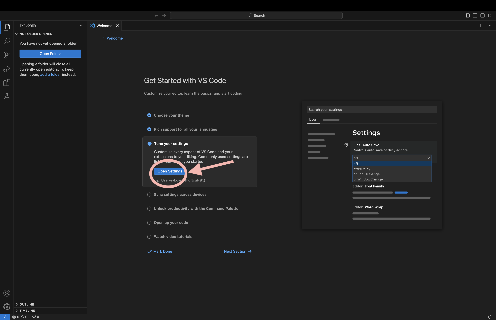Fig. 19 Tune VSCode’s settings to your liking.
Recommended to enable backup and sync settings. If you want do this then sign in before changing any options.
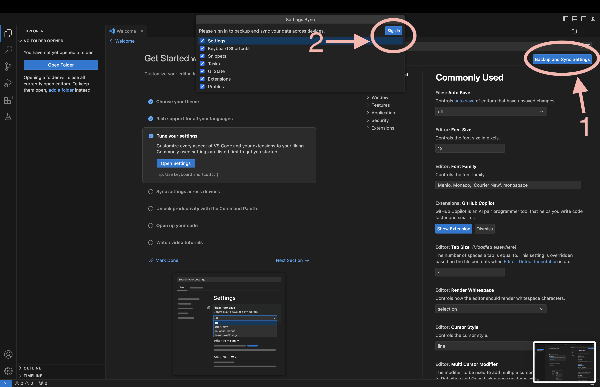Fig. 20 Recommended to turn on settings synch to ensure a consistent VSCode experience across devices.
Settings to consider (you can search for them to quickly find them):
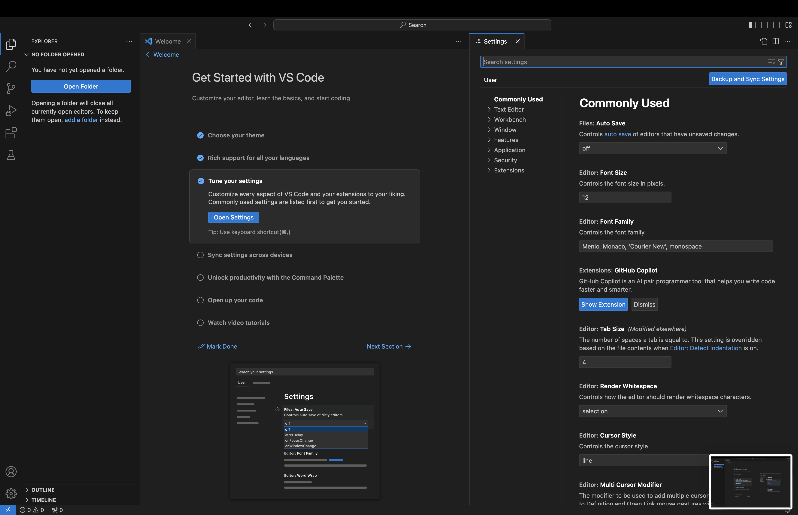Fig. 21 VSCode has a lot of settings. If you’re new to IDEs you probably just want to start with the suggestions below.
Files: Auto Save
Editor: Rulers (we’re sticklers for 80 character lines)
CMake: Options: Status Bar Visibility (set to visible)
Note
With setting synching on make sure you don’t set any user setting to a workspace specific path or it will be set across all your accounts.
At this point you’re free to follow the remaining “Get Started” steps, but VSCode is mainly interested in showing you how to start a new project and we want to use an existing one.
Creating an NWChemEx Development Environment
Now that you have VSCode initialized we will create a development environment,
or as VSCode calls it, a “workspace”. Workspaces reside in directories so go
ahead and create the directory for the workspace now. We recommend something
like /Users/your_username/nwchemex (you can create the directory in Finder
or via terminal). The remainder of this tutorial refers to this directory as
the “workspace directory”.
Adding Repositories
Fig. 22 Step 1. Switch to the source control view (if it’s not there go to
"View"->"Source Control"). (If you have files open you will instead
see the source control for those files. To add a repo close the files or
skip ahead to step 9).
If you have not previously installed git see obtaining_dependencies_on_macos (if you click on “Download Git for macOS”, it’ll just redirect you to git’s website which will duplicate our instructions). Once git is installed, click
reloadin the source control view.
Fig. 23 Step 2. (With git installed) click “Clone Repository”.
Fig. 24 Step 3. Click “Clone from Github”.
Fig. 25 Step 4. If asked, allow the GitHub extension to sign in.
Fig. 26 Step 5. You should now see all the repos you have. Search for the one you
want. For sake of the tutorial search for NWChemEx/.github, i.e., this
repo.
That will bring up Finder. Select the workspace directory as the destination.
Fig. 27 Step 7. When prompted open the repository.
Fig. 28 Step 8. If prompted, decide whether you trust us (we’ll assume you do and click yes).
Fig. 29 Step 9. Once there are files in your workspace the souce control view will
change to allow you to interact with the version control of the open files.
Unfortunately, this means we can not add additional repositories the same way
we did in Step 2. Rather, you need to use the command palate
(command + shift + P) then search Git: Clone. That will return you to
Step 3 above, with the caveat that what was Step 7 should be replaced by
Step 10 below.
Fig. 30 Step 10. Since you have files in your workspace already the dialog box from Step 7 will change and you will want to select “Add to Workspace” instead of “Open”.
Fig. 31 Step 11. Repeat Steps 9 and 10 until you have all the repositories you want.
Once you are done save your workspace by going to
File->"Save Workspace As...". We recommend saving it into the
nwchemex workspace directory and naming it as
nwchemex.code-workspace.
Note
If you choose a repository containing C++ source code, e.g.,
NWChemEx/chemist, VSCode may prompt you to select a kit.
Instructions for this are below. To get this to go away for now just
click “unspecified” or press esc.
Creating a CMake Toolchain File
CMake relies on toolchain files to pass configuration variables to dependencies.
Note
We suggest putting the toolchain in the workspace directory and not in any of the repositories. Unfortunately, this means we can’t use VSCode’s editor to create/edit the file (VSCode will only let us create/edit files in the repository directories we downloaded). Thus, if you put it in the workspace you’ll have to use an external editor to write the file.
In the directory of you choice, create a new file
toolchain.cmake.Modify the toolchain file. Syntax is
set(<name_of_variable> <value>). Some variables you may want to include are:NWX_MODULE_DIRECTORY. Set this to where you want plugins and modules to be installed to.CMAKE_CXX_STANDARD. Set this to 17 if for some reason your C++17 compliant compiler doesn’t at least default to 17 being enabled.BUILD_TESTING. To build the unit tests.
An example:
set(NWX_MODULE_DIRECTORY /path/to/your/workspace/directory) set(CMAKE_CXX_STANDARD 17) set(BUILD_TESTING TRUE)
Setting up Kits
Kits are sets of tools to use to build the code. They are usually named based on the compiler you want to use. Since MacOS ships with Clang, this tutorial assumes you have Clang and are creating a Clang kit.
Note
This tutorial assumes you have set the setting
cmake.options.statusBarVisibility to visible.
Fig. 32 Step 1. Click on No active kit. If you had previously selected a kit,
this may instead display the name of that kit.
Fig. 33 Step 2. Select Clang <version goes here>.
Note
Depending on your VSCode settings, selecting your kit will immediately start a CMake configuration run. Since we’re not done setting up, it will likely fail…
Fig. 34 Step 3. Now we need to edit the kit to know about the toolchain file. Open
the command pallette (command + shift + P) and search for
Edit User-Local CMake Kits.
Note
This step assumes you did not skip the Creating a CMake Toolchain File section.
Fig. 35 Step 4. Add "toolchainFile": "<path/to/the/toolchain>" to your kit.
Note
If you have ninja installed (brew install ninja) we strongly
recommend adding it to your kit by adding the lines:
"preferredGenerator": {
"name": "Ninja"
},
"environmentVariables": {
"PATH": "/opt/homebrew/bin;${env:PATH}"
}
Configuring a Project
Fig. 36 Step 1. If you have multiple git projects open, make sure you select the one you want to configure.
Fig. 37 Step 2. Click CMake: [Debug]: Ready to start configuring.
Fig. 38 Step 3. Select the configuration you would like.
Troubleshooting
If you get an error about the CMake executable like:
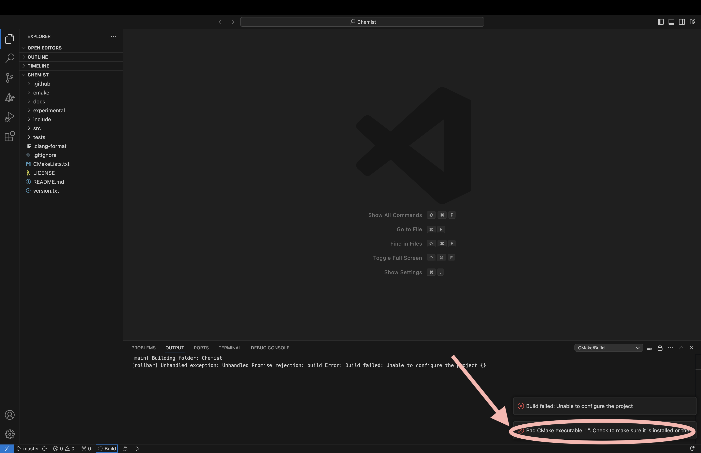Fig. 39 Bad CMake executable error.
it most likely means you do not have CMake installed (see Obtaining Dependencies on MacOS for instructions) or VSCode can not find CMake. To set the CMake executable open the command pallette (command + shift + P) and search for
cmake.cmakePath.If you get an error about
NWX_MODULE_DIRECTORYnot being set, i.e.: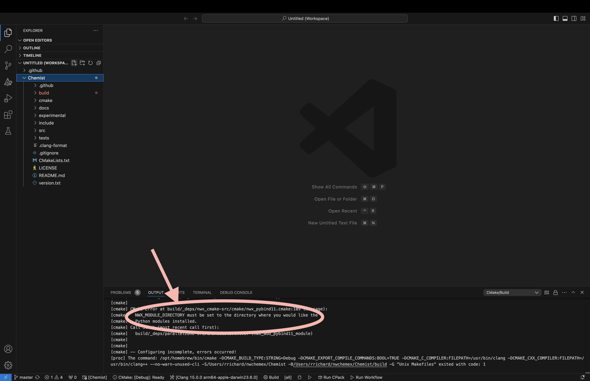Fig. 40 Failure to set
NWX_MODULE_DIRECTORY.it either means you did not pass your toolchain to CMake (see Creating a CMake Toolchain File) or you did not set
NWX_MODULE_DIRECTORYin your toolchain file.If the configuration fails because of a missing dependency (e.g., MPI or Boost) consult Obtaining Dependencies on MacOS.
If the configuration fails because of the missing Python developer files, e.g.,
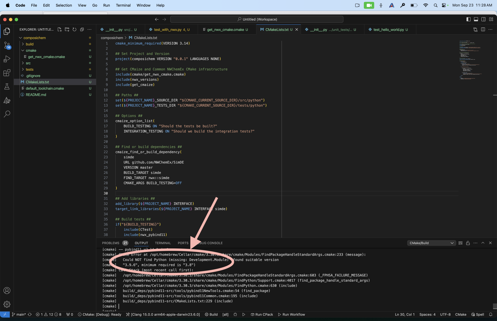Fig. 41 CMake could not locate the Python header files.
consult Obtaining Dependencies on MacOS.
Building and Testing
Note
We assume you have setup a kit already. If not see Setting up Kits.
Fig. 42 Step 1. Set the project, build configuration, and kit to what you want.
Fig. 43 Step 2. Click build.
Fig. 44 Step 3. Assuming Step 2 is successful, click on “Run CTest” to run the test suite.
Committing Changes Back to GitHub
Note
This section assumes familiarity with git terminology.
Fig. 45 Step 1. Switch to the source control view.
Fig. 46 Step 2. (Optional) select the file(s) you want to stage by clicking on the “+” next to the file(s). If you do not stage files VSCode will assume you want to commit all changed files.
Fig. 47 Step 3. Type a descriptive commit message.
Fig. 48 Step 4. Click on the commit button. At this point your changes are only committed to your local copy of the repository. We still need to push them to GitHub.
Fig. 49 Step 5. Once you click “Commit” the button should change to “Synch Changes”. Click that to push your changes to GitHub.
Troubleshooting
You get an error about
user.nameand/oruser.emailfor git is not set. i.e., something like: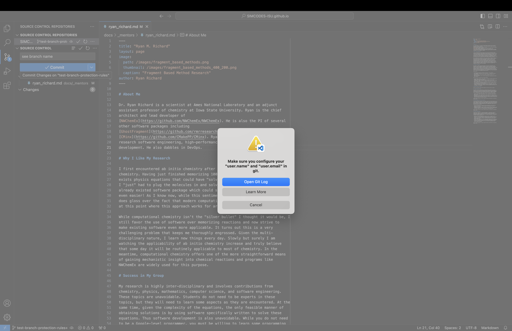Fig. 50 Error when your git credentials have not been set.
The easiest way to fix this is to open a terminal (the one in VSCode works fine) and run:
git config --global user.email "your email goes here" git config --global user.name "your name goes here"
For example:
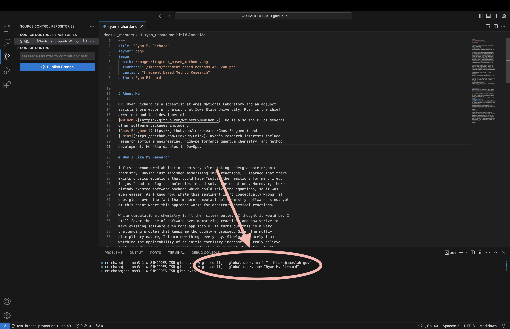Fig. 51 How to set the email and user name for git.
When attempting to synchronize with GitHub you get a cryptic error like:
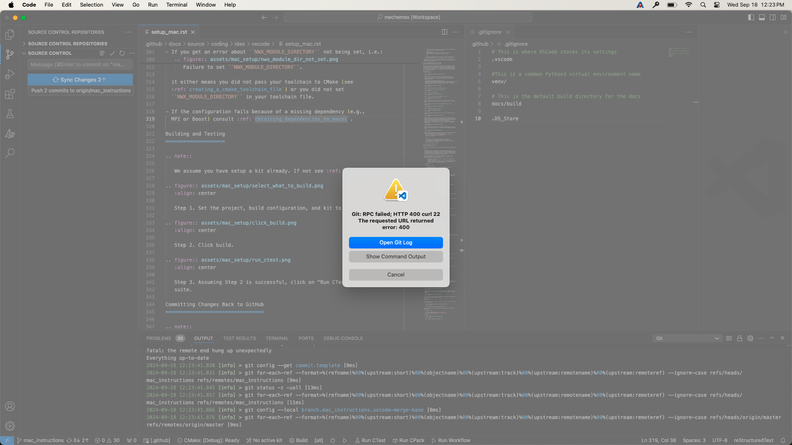Fig. 52 Cryptic error when synchronizing.
For me this was caused by a credentials issue. I simply ran
git pushfrom the VSCode terminal (in the root directory of the repo) and gave permission to VSCode to use my passwords. From that point forward commit and synchronization worked fine from VSCode.